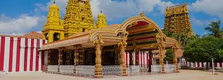
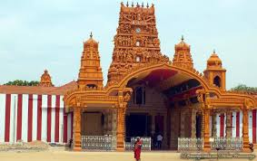
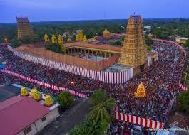

Nallur Kandaswamy Kovil (Jaffna)
 
The Nallur Kandaswamy Kovil is a Hindu temple, located in Nallur, Northern Province, Sri Lanka.
The presiding deity is Murugan (Kartikeya) in the form of the divine spear vel in the sanctum,
the primary shrine, and in other forms, namely, Shanmugar, Muthukumaraswami,
Valli Kanthar with consorts Valli and Deivayanai, and Dandayuddhapani, sans consorts in secondary shrines in the temple.
The original, Kandaswamy Temple was founded in 948 CE.
According to the Yalpana Vaipava Malai, the temple was developed at the site 13th century by Puvenaya Vaku, a Minister to the Jaffna King Kalinga Magha.
Sapumal Kumaraya an adopted son of Parakramabahu VI,
who ruled the Jaffna kingdom on behalf of the Kotte kingdom is credited with building the third Nallur Kandaswamy temple.
Nallur served as the capital of the Jaffna kings, with the royal palace situated very close to the temple.
Nallur was built with four entrances with gates. There were two main roadways and four temples at the four gateways.
 Location (Nallur Kandaswamy Kovil [Jaffna])